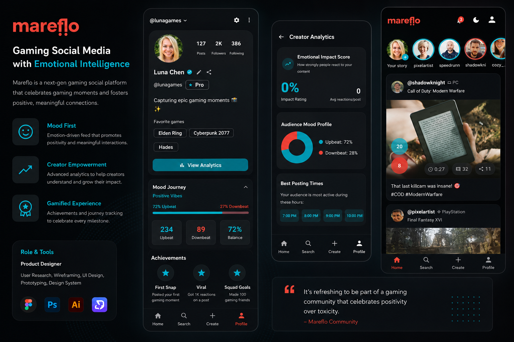

An independent gaming social platform MVP, designed, prototyped, and built solo — anchored by an original interaction pattern called MoodDial.
Mareflo is a passion project born from a simple frustration: binary reactions — like/dislike, thumbs up/down — don't capture how gamers actually feel about a clip, a play, or a moment. A clutch win and a lucky win might both get a "like," but they're not the same feeling at all.
So I designed MoodDial — an interaction pattern that replaces the single-tap reaction with dual emoji sliders, letting a player express what they felt and how much in a single gesture.
The design question underneath it: how do you capture nuance without adding friction? A reaction has to happen in the two seconds after a clip ends, or it doesn't happen at all. Two sliders, pre-positioned at neutral, let someone express something genuinely specific with the same number of taps as a single like button — just a drag instead of a tap.
I treated the whole build as a design problem first, not a feature list: research the actual reaction moment, prototype the gesture until it felt fast rather than fiddly, then build the rest of the social platform — feed, profile, clip sharing — around that one interaction being right.
This isn't a screenshot. It's the real MoodDial interaction — drag both sliders.
I built the entire MVP myself using an AI-augmented workflow: Claude for product thinking and content, Cursor for implementation, Figma Make for rapid prototyping, and Replit for deployment — going from concept to a working product without a traditional dev team.
In practice that meant thinking through user flows and edge cases with Claude before touching a screen, exploring the MoodDial's visual behavior fast in Figma Make once the interaction logic was solid, implementing it properly in Cursor, and shipping to a live, testable build in Replit — compressing a process that would normally involve a small team into one continuous loop.
Mareflo is proof of how I work when I own the whole stack — research, interaction design, prototyping, and shipping.
It's become the clearest demonstration of my AI-augmented design practice in interviews — not a slide about how I'd use AI, but a shipped product built with it.
